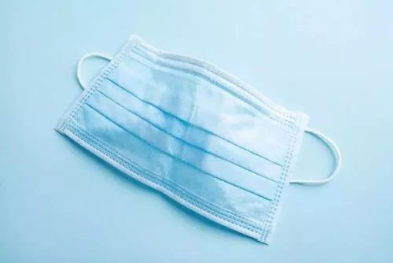

天价口罩背后：原料价一天一涨，不惜亏本生产
原文链接 备份链接 在疫情防控的持续压力下，口罩的供给，尤其是防疫一线的供给情况依然紧绷。这背后既有制约企业生产的原料问题，民众也存在过度追求N95等专业口罩的误区，更有人借机囤积居奇，乃至造假售假。 全文3748字，阅读约需5.5 …
30.01.2020

本文字数：1684，阅读时长大约2.5分钟
导读：“病毒属于潜伏期，我们要做好全部的准备，亏钱也要做。”
作者 | 第一财经 刘佳
大年二十七，刚刚从成都回到老家江西准备春节的90后廖佳明，急急忙忙买了一张机票在第二天飞回成都。原因只有一个——“生产口罩”。
他是四川恒明医疗器械有限公司（下称“恒明医疗”）的总经理，在成都彭州工厂里，恒明医疗有多条生产相关医疗器械的自动化生产线，医用口罩是其中之一。
防止新型冠状病毒肺炎疫情继续扩散，口罩是第一道防护墙。决定返回成都的当天晚上，廖佳明联系工厂厂长，给返乡过年的工人们一个个打电话，承诺报销车费，工资提到了三倍，争取保证过年期间生产线能够24小时不停地运作。
第一批生产的医用口罩、手术衣、防护帽等医用物资在紧急消毒解析完成后，恒明医疗决定先用于捐赠援助武汉。此外，过去只在线下销售的恒明医疗，春节期间第一次在天猫平台进行了线上销售，一上午上线的10万只一次性的医用外科口罩很快一售而空。目前，恒明医疗生产出的产品服从相关政府部门统一调配，有一部分物资直接供给医院、一线执法人员等。
廖佳明告诉第一财经记者，目前工厂实行三班倒，但口罩每天生产量波动较大，约2万只到8万只左右。产量波动背后的原因，一是在于机器超速运转问题，二是在于原材料的供应问题。
由于生产口罩的机器处于24小时超速运转，机器偶而出现普通工人没有办法解决的问题，于是每一班派出一名技术人员守着机器面前，一旦机器出现问题马上处理。
出于对疫情形势的判断，恒明医疗决定继续采购机器并增加更多生产线，但没想到，口罩机器也涨价了。之前一台生产口罩机器的采购价格在18万左右，现在两天涨了6万左右，“前两天我们买了订了两台，涨到了24万；今天再问已经到了29万、30万。”
除了机器维护和采购成本外，工厂面临的另一个困难是原材料供应短缺。从口罩面层用的纺粘无纺布材料到口罩的芯体部分材料熔喷无纺布，再到鼻夹、挂绳，都呈现不同程度的短缺和成本上涨。廖佳明说，春节期间，口罩整体原材料价格整体上涨约50%，每一天还在上涨。不过，也有一些供应商仗义地选择不涨价，甚至降价供应。
事实上，口罩利润并不算大，特殊时期再加上人工开支、原材料成本、物流成本的提高，企业利润被进一步削薄。廖佳明表示，口罩不涨价，调配的口罩物资目前无偿供应，不用计算一定亏钱，但大家现在所有的心思放在抗击疫情上，“病毒属于潜伏期，我们要做好全部的准备，亏钱也要做。”
遗憾的是，因为生产的波动性等多重原因，恒明医疗在天猫销售的部分口罩未能如期发货，正面临不少用户投诉。按照廖佳明预计，因为投诉等原因，仅线上平台算下来可能要赔付不少。

不过，今日阿里巴巴方面人士告诉记者，对于商家优先供应武汉抗疫情一线的订单，平台将与商家沟通核实，予以免责；消费者的退款正在推进，有平台进行兜底。
为了及时支持与高效服务抗疫企业，在口罩工厂紧锣密鼓生产的同时，当地政府部门派出专项工作组，采取一对一服务方式入驻工厂，协调解决企业原料供应、员工组织、物流运输、设备采购中的具体困难，帮助企业全力做好口罩等防控应急物资生产。
廖佳明告诉记者，有关部门专门派出4~6人的工作班子，每天驻扎在恒明医疗的工厂里，随时帮助企业解决实际生产碰到的问题，例如原材料出现短缺，政府派驻工厂的工作组帮忙在省内以及跨省广泛联系，牵线对接供应商，让生产减少后顾之忧。特别是在政府部门了解到工厂不计成本采购机器加速生产口罩物资的做法，承诺表示一定想办法为企业申请补上差价。
此外，面对工厂一定程度上的资金周转压力，廖佳明透露，银行相关人员快速在一线实地了解企业生产经营情况及融资需求，现场为企业制定专属金融服务方案，给予特别利率优惠并减免相关手续费用，恒明医疗在银行申请的100万的贷款， 48小时之内就完成了贷款发放。
在采访快结束时，廖佳明告诉记者，自己家里有5口人，但只有不超过10个口罩的存货，每天只有一人外出进行家庭采买。他呼吁，对于普通人来说，最好的防护就是尽量少出门；在口罩物资紧张的情况下，这样能够为一线的工作人员留出更多防护用品。
【推荐阅读】
UP主实拍：“空城”武汉的物价、交通 、生活状态


原文链接 备份链接 在疫情防控的持续压力下，口罩的供给，尤其是防疫一线的供给情况依然紧绷。这背后既有制约企业生产的原料问题，民众也存在过度追求N95等专业口罩的误区，更有人借机囤积居奇，乃至造假售假。 全文3748字，阅读约需5.5 …
原文链接 备份链接 在这场抗击新病毒的战争中，一线医护人员不得不为自身防护揪心，他们和医院、捐赠人一起被迫卷入一场医疗物资的募捐赛 文 |《财经》记者王丽娜 辛颖 编辑 | 王小 这是历次疫情中，一线医院大批量第一次直接向公众募捐，也是 …
原文链接 备份链接 来源：腾讯新闻《潜望》 栏目 作者：张珺 从北上广深等城市筹集善款到口罩、防护服发放到医生护士手中，需要经历多少难关？ 1月初开始新型冠状病毒席卷中国，商业公司、基金会、普通民众、海外华侨留学生，捐赠速度空前。包括企业 …
原文链接 备份链接 *************▲*************1月30日，海军军医大学医疗队三病区医护人员正在穿戴防护用具。（新华社 陈晨/图） 全文共*3590*字，阅读大约需要7分钟。 钟南山表态的前两天，政府部门连夜召 …
原文链接 备份链接 武安医生（化名）所在的医院是孝感市三家抗疫医院之一。距离武汉66公里的孝感是距离武汉最近的地级市，截止到1月28日上午，有确诊病例173例。与暴风眼武汉一样，以孝感为代表的武汉周边小城也正在经历着决战时刻。 坐诊之 …